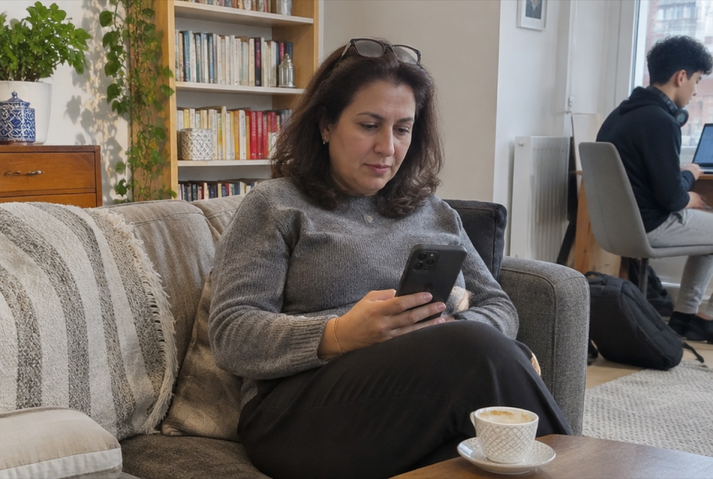

Des mois de cours, plusieurs professeurs, et aucun bilan ?
Les cours particuliers aident pour le contrôle de la semaine. Ce qui manque souvent : savoir d’où viennent les points perdus, et garder le même professeur assez longtemps pour les reprendre.
C’est par là que nous commençons.
| Matière | Moyenne | Appréciation |
|---|---|---|
| Mathématiques | 9,4 | « Des difficultés ce trimestre. Il faut travailler plus régulièrement. » |
- Il divise par x et perd une solution.
- Il fait une erreur de signe en factorisant.
- Il lit x² = 5 là où il est écrit x² = 5x.
Le bulletin dit qu’il y a un problème. Notre test dit lequel.
D’abord on mesure. Ensuite on travaille.
30 à 45 minutes
1Le test
Votre enfant répond à une vingtaine de questions, en 30 à 45 minutes selon sa classe. Chaque mauvaise réponse proposée correspond à une erreur de raisonnement précise.
Sous 24 heures
2Le rendez-vous
Un professeur vous montre en visio ce qui tient, ce qui est fragile, et dans quel ordre le reprendre. Vous recevez tout par écrit.
Un trimestre
3Le plan
Si c’est utile, votre enfant suit un plan de 12 semaines avec le même professeur : le temps entre deux bulletins. Vous pouvez arrêter en route. Si le test montre qu’il n’en a pas besoin, nous vous le disons.
Les solutions de l’équation x² = 5x sont :
Ce que le test repère
Choisissez une réponse : chacune correspond à une erreur précise.

Rapport de la semaine 4
- Travaillé Dérivées de fonctions plus complexes.
- Acquis Dérivée d’un produit ; tableau de signes.
- À renforcer La justification du signe de la dérivée.
- Plan Étape « chapitres de l’année », à l’heure.
Chaque semaine de cours, vous savez où il en est.
- Après le testUn écrit qui nomme ses erreurs et donne le plan. Il est à vous, même si vous vous arrêtez là.
- Après chaque séanceUn compte rendu de ce qui a été travaillé.
- Chaque semaine de coursUn rapport court, comme celui-ci.
- Entre les séancesL’équipe répond à vos questions sur WhatsApp, de 9 h à 18 h.
Vous n’avez plus à deviner ce qui se passe pendant les séances, ni à le lui demander le soir.
À domicile, on prend le professeur disponible près de chez vous. En visio, on prend celui qu’il faut.
Exemple : votre enfant est en terminale, en spécialité maths.
À domicile
Le professeur disponible près de chez vous.
En visio
Celui qu’il faut.
Le même professeur pendant les 12 semaines, choisi pour la matière et le niveau.
S’il devait s’absenter longtemps, un professeur du même niveau reprend le plan là où il en est, et vous pouvez choisir d’arrêter avec remboursement du reste.
Les professeurs : prénom, matière, parcours en une ligne, sans photo pour le moment.
Un trimestre, tout compris. Et vous pouvez arrêter en route.
Prix réel, sans crédit d’impôt : la visio n’y donne pas droit.
Voir les programmes et les prix- Première séance remboursée si vous n’êtes pas satisfait
- Arrêt possible à tout moment, avec 30 jours de préavis
- Rien à résilier : le plan s’arrête seul à la fin
- Pas de frais d’inscription ni de cotisation
- Paiement en trois fois sans frais si vous le souhaitez
Les questions qui bloquent

Et si mon enfant n’a pas envie ?
Le test ne l’engage à rien, et ce n’est pas une note. Pendant le rendez-vous, le professeur lui parle directement : de ce qu’il sait faire d’abord, puis de ce qui lui coûte des points.
La visio, ça marche pour un adolescent ?
Vous craignez qu’il décroche derrière un écran. Vous recevez un compte rendu après chaque séance, et s’il ne se connecte pas, vous êtes prévenu dans les 10 minutes.
Combien de temps avant de commencer ?
Vous choisissez le créneau du rendez-vous à l’inscription. Votre enfant passe le test avant, et le professeur vous explique le résultat dans les 24 heures qui suivent. La première séance peut avoir lieu dès le lendemain du rendez-vous.
Et si je veux arrêter ?
Vous pouvez arrêter à tout moment avec un préavis de 30 jours. Les séances faites et celles du préavis sont dues, le reste vous est remboursé. Et le programme s’arrête seul à la fin des 12 semaines : rien à résilier.